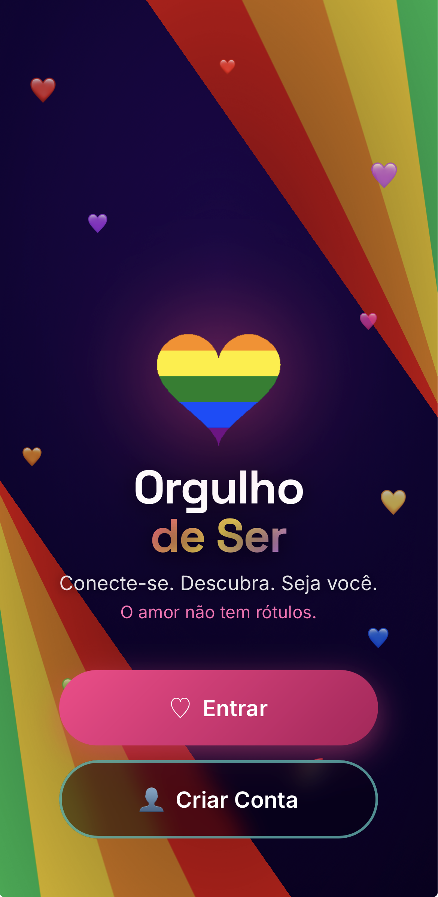

Orgulho de Ser
No arAplicativo · Criado e mantido por mim
Aplicativo de relacionamento e comunidade para pessoas LGBTQIA+. Tem perfis individuais e de casal, sistema de curtidas e matches, conversa em tempo real, agenda de eventos da comunidade, filtros de descoberta, moderação de conteúdo e assinatura paga integrada. Desenvolvi tudo, do banco de dados à publicação.
Abrir o aplicativo ↗